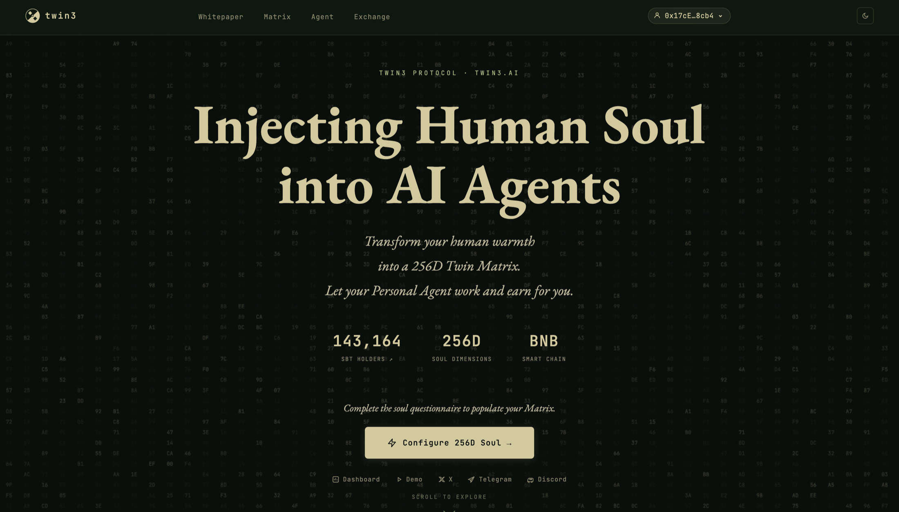
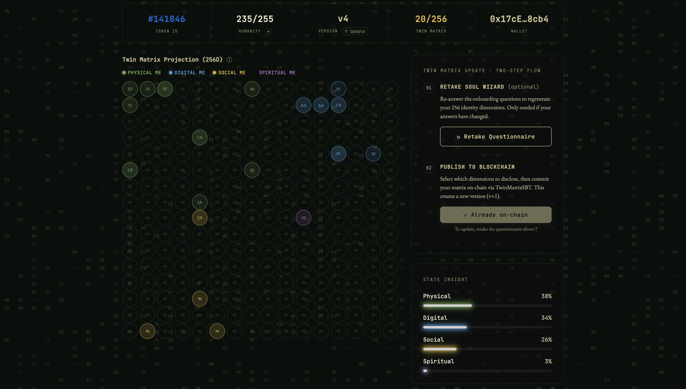
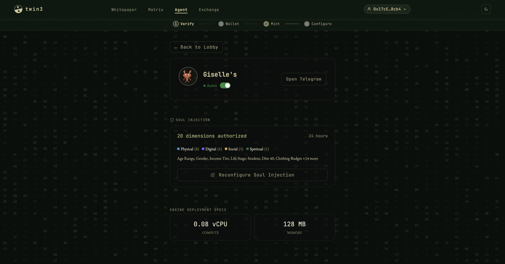
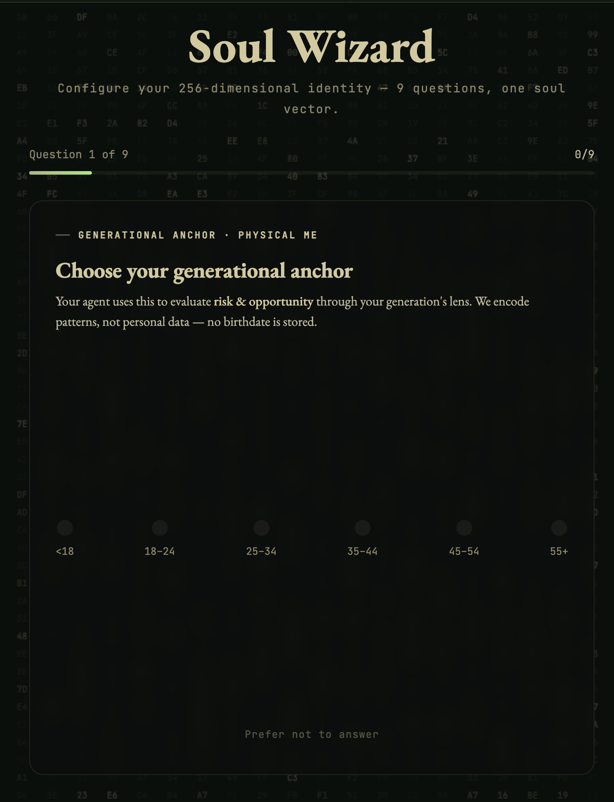
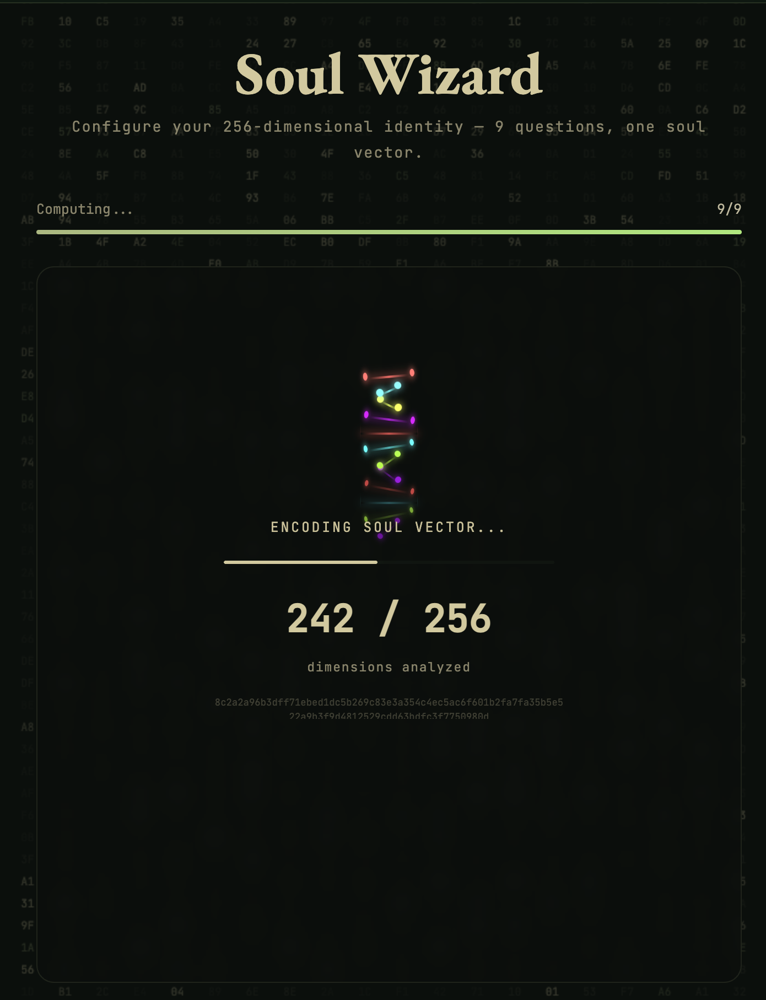

How do we design trust and transparency for AI-driven identity in a decentralized agent marketplace?
The 30-Second Version
People are asked to trust AI agents and on-chain systems they can't inspect — what an agent knows, whom it represents, and what it's allowed to do.
Owned the UX for the Soul Wizard onboarding and the wallet / agent permission screens — research, UI design, launch, testing and iteration — plus an information architecture that explains identity and authorization in plain language.
From 10-day hackathon build to live mainnet product. Across the three-week testnet window, wizard completion rose 20%, and 36 alpha builders called out the onboarding flow and permission framing in their feedback.

The shipped product — twin3.ai · My Role: UX Research, Interaction Design, Wizard Flow, Agent & Matrix Screens
How do you make on-chain authorization legible to someone who has never heard of a smart contract?
THE QUESTION THIS PROJECT ANSWERS
Twin3 is building a marketplace where AI agents act on a person's behalf. The idea behind it is that you decide how your identity and permissions are represented to those agents, instead of a system inferring it for you.
The architecture set the constraints I had to design inside. A user's identity is a 256-dimension vector held in a soulbound token; binding that token to an agent, and scoping what the agent may then do, are both on-chain actions with their own vocabulary — SBT, ERC-8004, validity period. None of it is optional and none of it is familiar. The design problem was never to hide that machinery; it was to decide how much of it a person has to hold in their head before they can act.
In most AI and Web3 products, users trust complex systems without understanding what data is being used, how their identity is represented, or what an agent can do on their behalf.
Make agent identity, data access, and permission scope understandable to someone who has never used a wallet, without pretending the technical layer is not there.
I owned the UX for the Soul Wizard onboarding flow and the wallet / agent permission screens — research, information architecture, user flows, UI design, and post-launch iteration through testing and revisions. Product direction was set with the founding team: I proposed and argued for the interaction decisions. Engineering brought platform requirements, and part of my work was designing within those technical constraints and working closely with engineers to keep the flows feasible to implement. The Twin Matrix itself is a team concept: it holds a user persona assembled from the wizard answers and from how the person interacts with the platform, and I worked with engineering on how to visualize it.
How do users understand the role of an AI agent in representing their identity?
What information do users need before trusting or interacting with an agent?
How should the product explain authorization and data access without overwhelming users?
What makes an agent marketplace feel transparent, credible, and safe?
How can we balance Web3 technical accuracy with a more approachable user experience?
Hackathon phase relied on rapid competitive research and prototype iteration. Post-hackathon testnet release enabled structured community testing.
Recruited from the Twin3 community — a mix of Web3-native users and AI-interested users with limited decentralized infrastructure experience. This mix was intentional to test whether the product could serve both groups.
Marketplace browsing needed both utility and credibility signals
Users wanted to evaluate ownership, purpose, permission scope, and reliability — not just agent capabilities.
Calm, infrastructural UI outperformed aggressive Web3 aesthetics
For an identity-related product, users responded better to a stable, minimal interface that communicated reliability.
How might we design an AI agent marketplace where users can understand, evaluate, and authorize agents with confidence — without needing to understand every technical layer behind the system?
Most of what decides whether an agent is safe to use sits in the backend: what it knows, who it answers to, and what it is allowed to do. The opportunity was to put those three things on the screen, at the moment someone is deciding whether to authorize it.
Wizard Flow — Soul Injection Onboarding
Landing
Value prop · Hero · CTA to begin
Matrix Build
4 quadrant input · 256 DNA nodes
Injection
Bind SBT to agent · confirm scope
Authorisation
Grant access · set validity period
Monitor
Agent dashboard · modify or revoke
The product structure was organized around three core user questions:
What is this agent?
Why should I trust it?
What am I allowing it to do?
This hierarchy emphasized agent identity → function → trust status → authorization scope → action controls, reducing cognitive load in a technically complex product.
What the hackathon build got wrong, and what changed after the testnet release.
Alpha · Hackathon Build
Web3 terminology (SBT, ERC-8004) introduced before users understood the product's core value
Dense information layout; wizard step count and purpose were unclear mid-flow
Permission scope and validity periods not surfaced — users uncertain what they were authorizing
Visual system inconsistent across screens; component patterns not yet standardized
Refined · Post-testnet
Product value established first; technical concepts introduced progressively through the wizard
Step count visible, plain-language labels at each stage; each step's purpose clear mid-flow
Explicit scope labels and validity periods on authorization screen — users know exactly what they grant
Consistent light/dark system, unified typography and spacing — UI perceived as stable and credible
An identity-first AI agent marketplace. Users can browse agents, understand what each agent represents, review trust and permission information, and interact under clearer authorization boundaries. The visual system stays closer to infrastructure than to crypto marketing.

Screen A — Matrix Dashboard · 256D Twin Matrix · 4-Quadrant Identity Overview

Screen B — Agent Settings · Temperature (Creativity) · Web Search Plugin · Long-term Memory
A 9-question onboarding flow that encodes the user's identity into 256 dimensions. Each question maps to one of four quadrants — Physical, Digital, Social, Spiritual Me — before the final Soul Vector is generated on-chain.
Design decision — make finishing feel worth it. Drop-off inside a long identity wizard is the obvious risk. I proposed adding a binding animation after each question group, rendered in the twin3 universe visual language, so every section closes with visible progress instead of another form. The wizard changes I worked on — step ordering, plain-language labels, and this animation — accompanied a 20% rise in wizard completion over the three-week testnet period: of the people who connected a wallet, the share who went on to finish the Soul Wizard. The figure is the team's platform analytics rather than a controlled test of my changes, and other work shipped in the same window.
Design decision — stop demanding a complete profile up front. The wizard originally treated identity as something you finish in one sitting. For a new and abstract concept, that asks for trust the product hasn't earned yet. We moved to letting people set up a starting profile and keep updating it as they use the platform — identity accrues with behavior, instead of being extracted before the first meaningful action.
Step 1 — Choose Your Generational Anchor

Step 9 — Soul Vector Encoding Complete

Soul Wizard · 9 Questions → 256-Dimensional Identity Vector → On-Chain SBT
Released on testnet and invited community builders to test the product. 36 builders shared feedback between Apr 4–20, 2026, providing early qualitative signals on product clarity, trust, and onboarding.
Strong first impression from the visual system
Light/dark modes, animations, typography, and color validated the calm, non-speculative design direction.
"The UI is slick — love both light and dark modes. Onboarding pop-up flow is innovative and genuinely logical."
— Alpha builder, Apr 2026
Onboarding perceived as smooth and logical
Critical for a product that needs to introduce AI agents, identity, and decentralized verification without overwhelming first-time users.
"Smooth and easy from onboarding. Interface is intuitive, processing fast and stable, with strong scalability potential."
— Alpha builder, Apr 2026
Identity verification became a key trust signal
Testers responded to the human verification layer — it made the product's trust proposition understandable and meaningful.
"I like the identity + zkHumanity angle — feels like proving real human signal, not just a profile."
— Alpha builder, Apr 2026
Technical stability affected perceived credibility
Low latency and stability on testnet directly influenced whether the product felt experimental or trustworthy.
"Testnet was very stable with impressively low latency, very rare at this early stage."
— Alpha builder, Apr 2026
The open question from this project became a study I'm running now: how does it actually feel to authorize an agent to act on your behalf? Alpha feedback told us people hesitated at the permission step, but not what the hesitation was made of — scope, reversibility, or simply not knowing what the agent would do next.
It pairs cognitive interviews (n=8), where people narrate what each control means to them as they move through the flow, with a survey (n=300) to test how widely those readings hold.
In alpha testing with 36 builders, the feedback centered on comprehension rather than visual polish — testers called out the onboarding flow, the permission framing, and the visual hierarchy. What we could see improving was how clearly the product explained itself; measuring that comprehension properly is the open question the study above addresses.
The interface that went live on mainnet is the one I designed — the Soul Wizard onboarding and the wallet / agent permission screens, carried from the testnet release and community testing with 36 alpha builders into the production release at twin3.ai.
I stayed with those screens through launch, testing, and the revisions that followed. The Twin Matrix visualization was worked out with engineering, and product positioning with the founding team.
Trust and comprehension turned out to be different problems. The alpha feedback was warm about the interface — testers called it slick, smooth, logical — and people still hesitated at the permission step. A system can feel safe before anyone understands what it is actually asking for, and the feeling arrives first.
Designing for AI agents requires designing mental models — not just screens. Who does the agent represent? What can it do? What data can it access? How does the user stay in control?
Testing with users outside the existing community
Improving permission management and revocation flows
Designing transparent agent reputation indicators
Introduce user testing earlier in the hackathon phase. With a product combining AI agents, identity, and Web3 authorization, earlier concept testing would have surfaced confusing mental models sooner.
Separate technical education from core product flow more clearly. Users need enough context to trust the system — but should not need to understand the full technical architecture before taking a first meaningful action.
On this project I sat between the founding team, engineering, and the people testing it. A lot of the design work was deciding whose constraint should win.
Making something easier to use is not the same as making it understandable. Hiding the complexity is usually the easier fix, but it does not help anyone decide. What I try to do is give the complexity a shape people can think about before they agree to something.
I was designing trust for users while still working out what would make me trust the technology myself. AI agents acting on someone’s behalf and identity that isn’t held by a platform were as unfamiliar to me as they were to many of the people we were designing for. That became useful in the process. The questions I had while learning the system were often the same questions a first-time user would have during onboarding.
Those ten hackathon days meant constant conversation across engineering and the founding team. Decisions were sometimes made and revised within the same afternoon. It was intense, but I realized I actually enjoyed working that way. I like having something unfamiliar to figure out, especially when I can work through it quickly with a team.